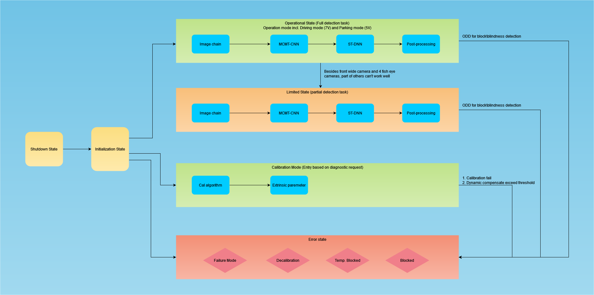

State Machine for ViPER
The ViPER may be working in different system states. These states and the transition between them will be managed by ViPER state machine.
Additionally, other components also need information about the ViPER states. The scope of the ViPER state machine is to provide these features.
The ViPER state machine shall communicate the external camera modes, and the mapping between external and internal system states.
The ViPER state machine shall be able to communicate the external system state to the bus network.
The ViPER state machine shall inform other components about the current ViPER states according to the current system state.

State Descriptions
Shutdown state: the system is in shutdown procedure.
Initialization state: the ViPER is initializing. All detection tasks are degraded.
Operational state: the ViPER is fully operational. All detection tasks can work well. Operational include low speed driving mode (11V), normal driving mode(7V) and parking mode(5V)
Limited state: part of detection error detected and related detection tasks are degraded. HW is fully operational.
Failure mode: an important error is detected (e.g., all camera heads fail, GPU fail, HW failure but not shutdown etc.) and the ViPER is running limited. All detection tasks are degraded, but ViPER state machine is still can work.
Calibration state: The camera is being calibrated (Static CAL or Dynamic CAL running)
Decalibration: the cameras are not calibrated properly. Intrinsic or extrinsic calibration data are missing, corrupted or out of range.
Temporary Blocked: the cameras have temporary blindness failure(>continuous 5 min), all detection tasks are degraded, this state is used for suppressing the HMI
Blocked: the camera is blocked, blindness failure (>continuous 30 min) is active and all detection tasks are degraded, and can't be recovery in current ignite cycle.